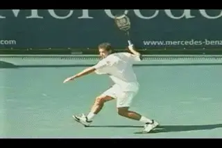
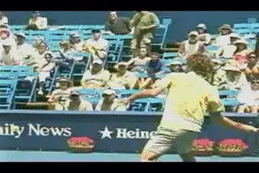
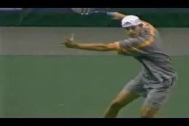
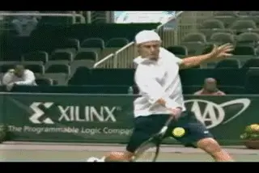
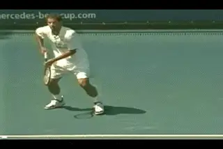
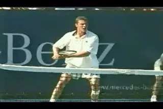

Building the Modern Forehand-Shot Variations¶
Building the Modern Forehand:
Shot Variations
John Yandell
In understanding the differences in the modern forehand, we've looked at the technical differences stemming from the grips. The final piece is to analyze how the players vary their swings for specific shot circumstances. Let's take a look at what happens when top players are on the run, dealing with low balls, or varying spin and/or angle.

Note in Pete's "reverse" forehand how the hand and arm rotation seems to approach that of the extreme forehands.
Running Forehands
When Pete hits his running forehand, he turns his hand and forearm over significantly more than on his basic drive, finishing as far over or almost as far over as the extreme players.This is what Robert Lansdorp first identified as the "reverse forehand." (Click here.)
Compared to his basic forehand, Pete turns his hand and arm over something like another 90 degrees, with the top of his forearm now facing more toward the back fence. Undoubtedly this has to be one of the factors that made his running forehand such a great shot.
In general, the players with the more extreme grips don't usually have to "reverse" as much on the run-probably due to their natural ability to increase the hand rotation and arm rotation in their basic motion.
But when they due it can get crazy. Watch the rotation on Guga's reverse forehand in the animation. You need a lot of flexibility for this one, and I wouldn't recommend trying it without passing a range of motion test, but note that the top of his forearm has turned over so much that it is now almost pointing down at the court.

On a reverse forehand with the extreme grip the top of the forearm can rotate so far that it points almost down at the court.
More Spin
The next variation is increased spin on a ball within the normal strike zone. Frequently you'll see a player generate additional top spin by turning the hand over faster, and finishing lower to the side, even when the ball is quite high. This is a variation in the basic drive.
Watch how Andy Roddick turns the hand over faster on a high ball to generate more topspin, resulting in a finish and a wrap that are lower and more to his side. Note this is a ball that is within his normal strike zone, but the finish is different than when he is trying to drive the ball flatter and possibly harder.

\ Notice how Roddick's hand turns over faster and finishes lower on this short angle.Sharper Angles
The third situation when players increase the hand and arm rotation is related to hitting angles. Again, this results in a shorter swing with less extension and a more extreme across the body warp.
Extreme players also speed up the hand rotation on lower balls in order to break off sharper angles. It's important to note that despite the appearance to the naked eye, heavily spun angle shots are not a function of "wrist snap." Again it's a question of the entire hitting arm turning over faster, and or turning over more to increase the brushing effect on the ball.

Hewitt increases his hand rotation dramatically but the wrist stays laid back.
Low Balls
No, it's not a "flick of the wrist," no matter how many times John McEnroe or any commentator says it is on TV. The low ball is probably one of the most misunderstood variations in the modern forehand. (Click here to read more about the Myth of the Wrist.) The players lift the ball and generate extra spin by radically increased the hand and arm rotation. As the Hewitt animation shows, the wrist is laid back before, during and well after contact.
[On short balls and low balls, the hand and arm rotation can be very extreme, as Hewitt shows. There is no "wrist snap." Instead, the entire hitting arm-hand, forearm and upper arm rotate together to lift the ball and generate spin, with the wrist still in the laid back position. Note the lack of forward extension after contact. The rotation is so extreme that the motion is virtually from right to left rather than forward.]
So What Does It All Mean? We have seen that the more extreme grips definitely have more internal movement in forward swing-more torso rotation and more hand and arm rotation. Do these differences increase racket head acceleration compared to more classical players? Possibly. (There is some limited research into this topic, but it raise as many questions as it answers. Click here.).
Are these differences associated with increased levels of topspin compared to more classic players? That definitely seems to be true. In general our studies of spin show that the extreme grip players are generating significantly more topspin than players with more moderate or classical grips.
What do we really know about the possible advantages of the more extreme grip styles?
But one key question to ask about the differences across the grip styles and the relative advantages and disadvantages is the question of efficiency. Assume for the sake of argument that at the pro level the extreme forehand swing patterns were found to generate more racket head speed.
If there is extra energy, how much of it is actually being translated into the hit? It seems obvious that the extreme players can generate more spin, but does that also mean more ball speed-or does it mean the opposite? Again we need more research and quantitative measurements of the top players to really answer this with any certainty.
Since we don't know how fast the racket is actually traveling at contact or in what direction(s), it's impossible to say whether players are making an efficient use of any extra racket speed they may be developing.
What if extreme players were swinging twice as fast, hitting more spin, but hitting at the same speed or even slightly slower speeds? What if the speed was the same, but the higher arc or trajectory of their shots meant the ball reached the opponent slightly more slowly? Would that be an efficient use of energy and a good trade off?

Is it possible that classical swings are more efficient, allowing players like Sampras to penetrate the court with equal or less energy?
Is it possible that a less extreme pattern allow players like Sampras or Agassi to hit the ball as hard or harder while using less spin and less energy? Is it possible that a flatter ball with a flatter trajectory gets to the opponent a little sooner and therefore penetrates the court more easily-even if it's hit at the same speed? I tend to think so, but as I said, we don't yet have the numbers to say. The question remain theoretical, and the answers-you guessed it-are still matters of opinion between coaches.
What we can say for certain is this. Whatever style forehand you want to play, the swing patterns for the various grips can all be associated with certain key positions over the course of the stroke.
In the previous articles, we've seen these common positions in the preparation, the hitting arm and the finish. In this article we've also established that for each grip style there is a characteristic racket position at the start of the foreswing, a characteristic pattern of torso rotation, and a characteristic range of hand and arm rotation. That information is what we need to build models for the modern forehand across the grip styles.
What's the forehand for you? At this point I think it still boils down to a question of playing style, playing level and personal preference. Even if the extreme patterns are eventually found to generate more racket speed, would that be enough to justify teaching them to all players?

There is no doubt that the extreme grips are widespread, here to stay and can lead to high level competitive success.
We know that in general the classic grips are associated with a more balanced, attacking style, irrespective of any other real or imagined advantages and disadvantages. In comparison, the extreme grips are associated with a more defensive backcourt style. These players definitely can be very powerful, but typically they play up to 10 or 15 feet behind the baseline.
It may be true that, at the pro level, the extreme grip heavy topspin backcourt style is the easiest way to achieve a certain level of success. It probably takes special gifts to step up and play on the baseline like Agassi, and/or a special personality to go to the net like Sampras, at least at the speed of modern pro tennis.
At the club level, however, we can ask whether there is any advantage whatsoever to a grip style based on heavy topspin and extreme defensive court positioning. If you are club player who is in love with Andy Roddick, you may have an overwhelming emotional compulsion to try to emulate his game. And I know from 20 years of coaching experience, that emotional compulsions cannot be overcome with logical argument.
It all boils down to personal preferences, with no absolute answers. But another thing we do know for sure, more and more players coming up through the game are using the extreme grips. They are the rule, not the exception, in high level junior tennis. Extreme grips seem to be here to stay at all levels, and coaches, whether by choice or not, have to deal on a regular basis with players who have them.
That's why understanding the differences between the classical and the more extreme patterns is critical for building the modern forehand. A coach or a player may have a set of technical beliefs about the forehand that are absolutely correct-just wrong for the particular grip style of the player he is working with.
Roddick at the 4 Key Positions